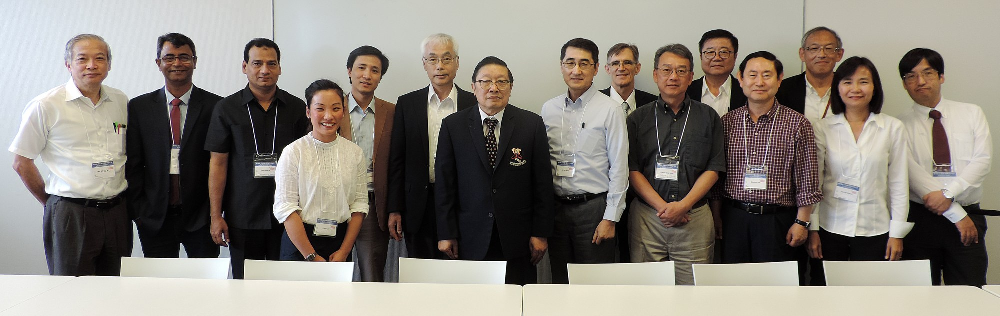

Minutes of the Council Meeting of the Asia Pacific Protein Association (APPA)
- Wednesday, 27 June, 2018, at 14:00 – 15:50
- Room 303 and 304, TOKI Messe, Niigata, Japan, (Venue of PSSJ annual meeting)
APPA Council Members Attending
- Jisnuson Svasti (Thailand / President of APPA)
- Yuji Goto (Japan / Past President of PSSJ)
- James R. Ketudat-Cairns (Thailand)
- Chwan-Deng (David) Hsiao (Chinese Taipei)
- Ping-Chiang Lyu (Chinese Taipei)
- Weontae Lee (Korea)
- Ho Sup Yoon (Singapore)
- Pimchai Chaiyen (Thailand)
- Md. Abu Reza (Bangladesh)
- Syed Abid Ali (Pakistan)
- Truong Quoc Phong (Vietnam)
- Hiroshi Shirai (Japan)
- Haruki Nakamura (Japan)
- Erinna Lee (Australia)
- Masafumi Yohda (Japan / Secretary General of APPA, Vice President of PSSJ)
Although Prof. Ming Lee (China) attended the PSSJ annual meeting, he could not attend the council meeting due to miscommunication.
Agenda Item
- Announcements from the President of APPA and protein communities
- Announcement from the President of APPA
Jisnuson Svasti chaired the Council Meeting and thanked PSSJ and IPR for arranging the Third APPA/PS/PSSJ workshop and IPR Seminar (File 1), which allowed APPA Council to meet. Since new members were present, he then asked council members to introduce themselves. - News from Protein Communities
James Ketudat Cairns announced that the Protein Society of Thailand would be arranging the 13th PST International Symposium on 7–9 August 2018, and welcomed protein communities in APPA, who were interested to attend.
- Announcement from the President of APPA
- Minutes of the Council Meeting held in Bangsaen, Thailand on July 12, 2017 (File 2).
Minutes had already been distributed and approved by email. - Discussion on TPS/PSSJ/APPA Conference, 2020, Hokkaido, Japan Update (File 3)
- Yuji Goto explained the background and present status of the conference.
- Based on the discussion with TPS, both the Core Organizing Committee and the Program Committee will consist of 12 members, 5 from TPS, 5 from PSSJ and 2 from APPA. Since there are few committee members from APPA, some PSSJ members will also be responsible for APPA.
- As the core organizing committee members, James R. Ketudat-Cairns and Zengyi Chang (China) are nominated. Pimchai Chaiyen and Weontae Lee will serve as program committee members. The details of the conference will be updated by the discussion in PSSJ and the meeting with TPS.
- Discussion on sustainability APPA
- Since the sustainability of APPA depends on the protein communities in each country/region, Council Members were asked to describe the status and activities of protein societies or related societies in their own country. Some communities had several protein-related societies already, while others were interested to start a new protein society.
- Incorporation of the APPA as a nonprofit organization in Australia or elsewhere to facilitate financial matters was discussed. However, given the diversity of the protein communities in APPA, no decision was made to proceed.
- Networking among Council Members was encouraged. So, it was suggested that each protein community should try to invite other APPA Council Members to seminars or symposia within their own meetings.
- The use of APPA web site was suggested. Each member is encouraged to post its local activities of their protein community to the APPA web site.
- Each protein community was also asked to provide names of local societies and organizations related to protein science, so that APPA would have a map of protein science-related organizations in Asia. This will be useful for advertising APPA conferences to a broader community.
- APPA Council reviewed the APPA bye-laws and made no changes
- Discussion on the Council Meetings.
It was recommended that a Council Meeting should be held annually on the occasion of APPA meeting or the domestic meeting of a protein community. The Indonesian Protein Society meeting in Indonesia (November 2019) will be a candidate. Other local meetings may be considered as well. - APPA Outstanding Protein Scientist Award.
An APPA Outstanding Protein Scientist Award was proposed. Comments were mainly positive. Since APPA has no funds, the prize for the award will be modest. However, we should invite the corporate sponsors to help. - Group photo
Photographs were taken after the APPA Council Meeting and after the Third APPA/PS/PSSJ Joint Workshop and IPR Seminar.
